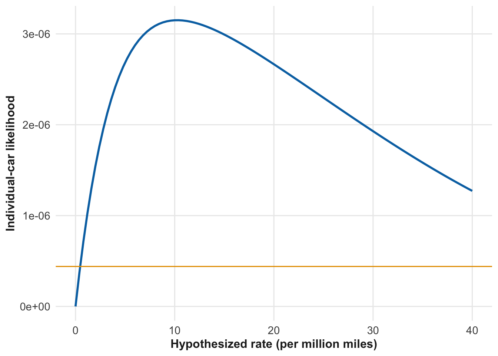
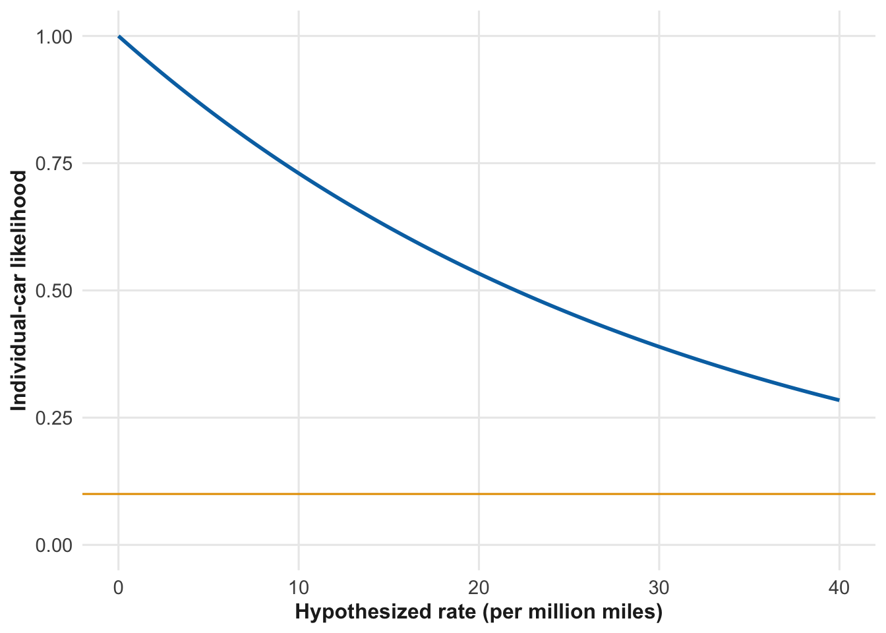
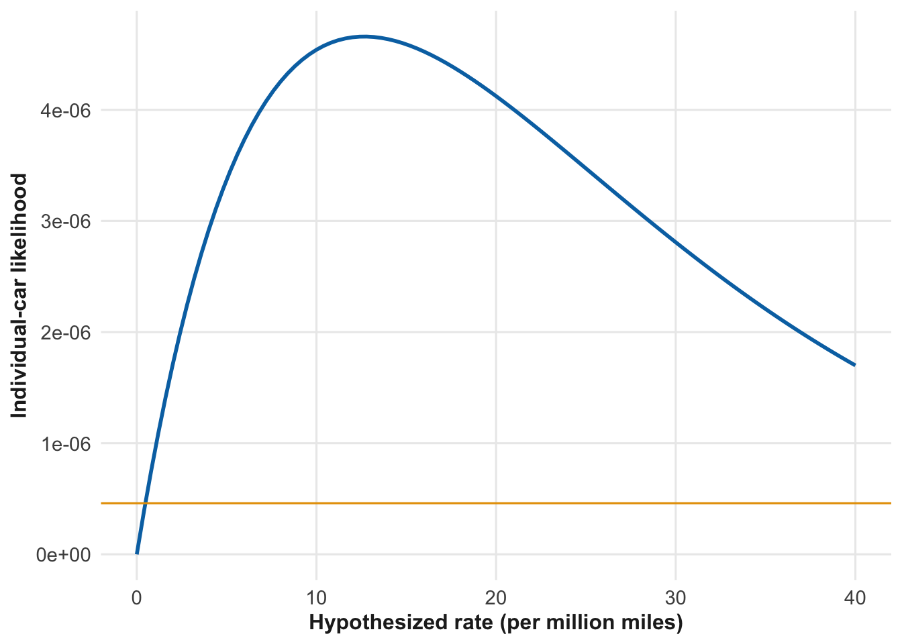
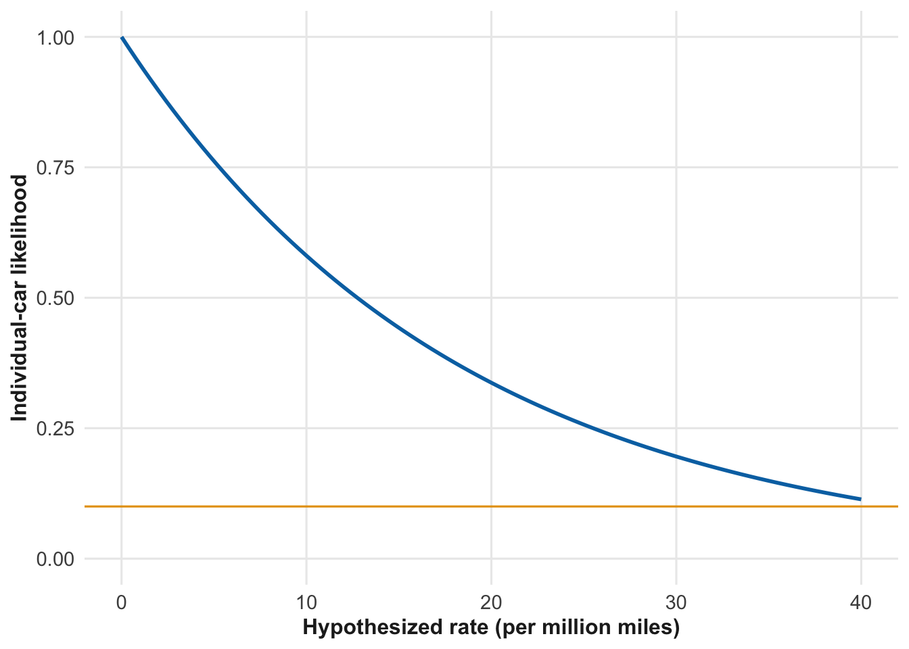
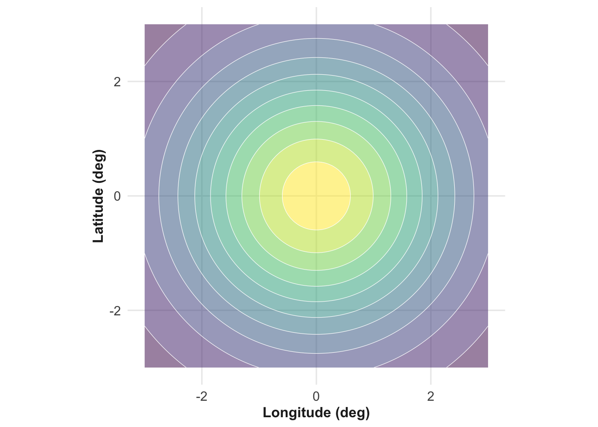
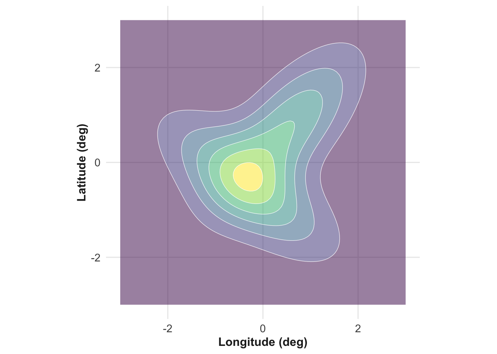
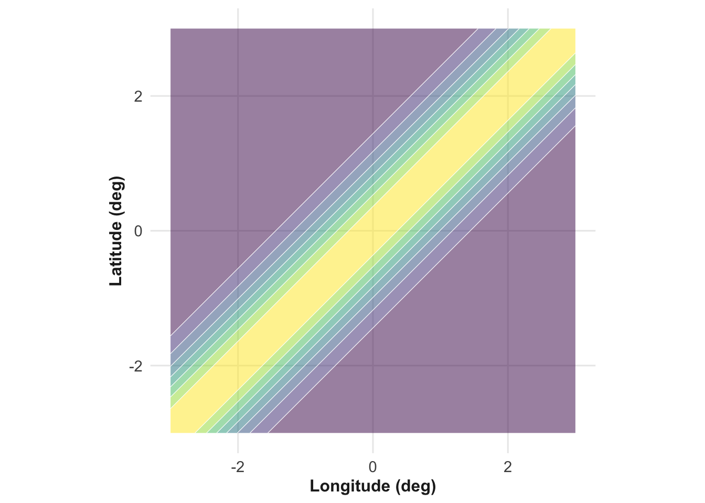
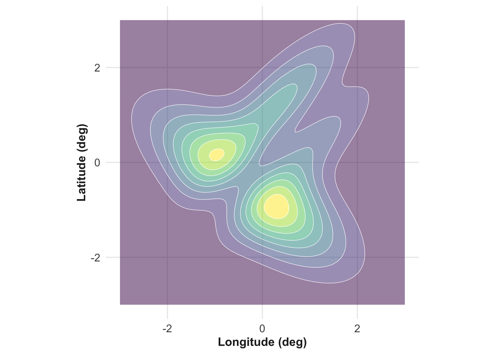

12 Bayesian reasoning
Vocabulary Review
- analysis (3)
- bayesian (8)
- data (2)
- functions (6)
- hypothesis (8)
- likelihood (11)
- mean (8)
- operationalization (2)
- per (3)
- point (3)
- range (8)
- rate (4)
- uncertainty (8)
- value (2)
New
- posterior
- prior
We are in the midst of a real-world experiment involving millions of people in a life-or-death situation. Perhaps that is an overly dramatic description. The experiment we have in mind concerns the testing of self-driving taxis in urban areas. Companies like Waymo have deployed fleets of self-driving cars that offer a taxi service.
That such testing is allowed is itself notable. How much experience will we need with the cars to be sure that we are making a proper judgment?
12.1 An uncertain situation
Companies currently run pilot programs deploying self-driving taxis in a handful of cities. They have already collected substantial amounts of data and reported summaries such as this Waymo bulletin. Instead of commenting on this data, let us imagine ourselves at the time when the safety experiment is just beginning. Then, we will gradually accumulate data to form and update our beliefs about fleet safety. We will keep it realistic, but because the data will be made-up, do not use this example to draw conclusions about the real world.
“Safety” is a dimension, an aspect of the transportation system. Modeling safety starts by defining it clearly, to operationalize it. Our operationalization in this discussion will be the number of miles driven by each car from the time it enters service until the first accident. We can define an “accident” as an incident that generates a claim on insurance or requires a police report. For other purposes, a different operationalization might be appropriate, for instance the number of close calls or near-misses
A car without an accident to date is not necessarily safe. Even accident-free cars provide information about fleet safety; the duration of the no-accident-yet interval carries that information. (See Figure 11.2.) A car that goes a large number of miles without an accident provides pro-safety evidence; A car that has an accident after a small number of miles does the opposite.
Chance influences whether a car is in an accident. This play of chance can be modeled with a probability distribution. An appropriate family of distributions for this was used earlier in Chapter 11: the exponential family. In Chapter 11 we used the time between incidents. For driving, the mileage of each car is a better representation of that car’s exposure to the risk of accidents.
Exponential distributions model the time interval, or mileage, in our case, between incidents. The interval here is the mileage from the start of the experiment until the first accident. For an individual car, this interval is modeled as random, a draw from the exponential distribution used to model the individual cars.
Even though each accident (or lack of accident) is random, the fleet safety plays a role. This fleet-level safety is operationalized by the particular rate parameter used for the individual-car randomness. The appropriate value for the rate parameter is uncertain. This uncertainty is large at the start of the experiment. As the experiment proceeds and more data arrives, the uncertainty will decrease.
12.2 The fleet-wide likelihood function
Fleet-safety uncertainty is a probability distribution on the rate parameter itself. Unlike individual-car uncertainty, this need not be exponential in form. At first, we don’t even know the proper form for the distribution should be. We will have to discover that form as we go along.
Suppose that at the end of each month the mileage and accident status of every car in the fleet are recorded. For any assumed value of the rate parameter, the likelihood of the observed data can be computed: multiply together the likelihoods for each individual car’s observed outcome.
The rate parameter is uncertain. Repeating the likelihood calculation for each possible value of the rate allows us to see how plausible each value is given the observed data. In other words, we create a likelihood function for the rate parameter.
Imagine that you are the person responsible for constructing the likelihood function that incorporates the latest data. You have a stack of cards, each recording the current mileage of an individual car or, if the car had an accident, the mileage at which the accident occurred. Each card’s information corresponds to an individual likelihood function for that car.
Plotting the individual-car likelihood functions requires choosing appropriate range of values for the rate parameter. Historical data on human-driven cars suggests a rate of about five serious accidents per million vehicle miles. A sensible plotting range is 0 to 40 accidents per million miles. The upper end lets you consider hypothetically very dangerous cars. The low end hypothesizes that self-driving cars are safer than human-driven. The middle hypothesizes that self-driving cars are about as safe as human-driven cars. Figure 12.1 shows three individual-car likelihood functions based on the most recent data for that car. The cars plotted in panels (a) and (c) have not yet had an accident. The car in (b) had an accident at mileage 78,954.



Consider the likelihood functions graphed in Figure 12.1. The two accident-free cars’ likelihood functions differ only slightly in shape.
The accident-free cars favor a low hypothesized rate parameter. Their likelihood functions peak at a rate of 0 accidents per million miles and fall steadily as the hypothesized rate increases. This evidence hardly proves that the cars are safe. Recall that a likelihood ratio of 10 is only “limited evidence” in favor of the more likely hypothesis. (See Table 11.2.) Only hypothesized rates where the likelihood falls below the magenta can be considered unlikely. So the accident-free cars don’t rule out a very high hypothesized rate of 40 accidents per million miles. This isn’t surprising, since the rate 40 per million miles amounts to an average of one accident every 25,000 miles! Reaching 54,000 miles isn’t shocking even under high risk.
The car in panel (b) experienced an accident. Its likelihood function has an argmax at a hypothesized rate of 12.7 accidents per million miles. This means an average of one accident every 80,000 miles, entirely consistent with the car having had an accident at 78,954 miles. This car only weakly argues against rates below 0.5 accidents per million miles.
Any individual car’s evidence does not precisely identify a specific hypothesized rate parameter. Each car here is entirely consistent with the historical rate for human-driven cars.
But your job is not yet complete. Combine the evidence from all the individual cars to assess what they have to say about fleet safety. Fortunately, this is easy. Just multiply the functions together. The result, from just these three cars is shown in Figure 12.2.
Data from just three cars cannot resolve whether the self-driving cars are safer or more dangerous than human-driven cars. You need data from hundreds or perhaps thousands of cars.
Since individual-car likelihoods are weak on their own, you decide to adopt a work flow where, as you pick up each car’s data card, you immediately update the combined likelihood, by multiplying it by the new card’s likelihood.
12.3 The Prior
There’s a small technical glitch to take care of. The first card has no combined likelihood to multiply it with. Two simple work-arounds are available:
Use the likelihood function from the first card as the initial combined likelihood.
Start with a combined likelihood function of that is uniform, which effectively says “I have no prior evidence for one hypothesized rate over another.”
Note that (a) and (b) amount to the same thing. In practice you are starting out with the likelihood function from the first card. But designers already did substantial work to make the cars safe. For instance, the government approved the test cars for use on the public roads in the first place.
The Bayesian framework has a slot for inserting such before-the-first-data-card knowledge into the analysis. This is called the ☞ prior ☜ and reflects what you know before looking at the data. The “you” here is important. The experiment aims to convince others, no just yourself, that enough evidence exists for a meaningful conclusion. So the prior should reflect the beliefs of both the skeptic and the enthusiast.
US Supreme Court Justice Ruth Bader Ginsburg had a helpful view about debate. She said, “Fight for the things that you care about, but do it in a way that will lead others to join you.” One way to lead others to join you is to acknowledge the possibility that they might be right. In the Bayesian framework, this means broadening your prior to support the views of all (reasonable) people engaged in the debate. You do not have to assign much probability to those views, but you must assign some.
Sensible priors should be broad, not narrow minded. This point is not unique to quantitative analysis, but applies to reasoning and debate more generally.
To have doubted one’s own first principles is the mark of a civilized man. — Supreme Court Justice, Oliver Wendell Holmes, Jr (1841-1935)
Doubt is an uncomfortable condition, but certainty is a ridiculous one. — Voltaire (1694-1778)
The whole problem with the world is that fools and fanatics are always so certain of themselves, and wiser people so full of doubts. — Bertrand Russell (1872-1970)
12.4 The Posterior and Bayesian updating
Let’s re-consider the work-flow presented in the previous section. You started with an appropriately vague prior, then multiplied it successively by the likelihood from each data card as you picked it up. In the end, you have a distribution that reflects all the data. This distribution is called the ☞ posterior ☜, the state of your knowledge after taking all the data into account.
Calling the likelihood function from the first card L_1_() and so on for the subsequent cards, the posterior distribution after n cards is:
posterior() \(\equiv\) prior() \(\times\) L_1_() \(\times\) L_2_() \(\times\) … \(\times\) L_n_()
Since the prior() in the previous section was vague, perhaps even flat(), it’s reasonable to wonder why even to give it a name; just multiply the cards’ likelihood functions together. Indeed, for a hundred years statistical theory was dominated by exactly this point of view, named “Frequentist statistics.”
Consider, however, a slightly different scenario for processing the data on vehicle mileage and accidents. Rather than a batch of cards coming in all at once, suppose that they arrive sequentially, one by one. For the sake of definiteness, let’s assume that they arrive once per day and that the likelihood function for each day’s data is L_day_().
On day zero, before any cards arrive, all you have is your vague prior, which we’ll call prior_0_(). In comes the first card, day 1, and you perform your calculation, multiplying that day’s likelihood by the prior:
posterior_1() $L_1_() \(\times\) prior_0_()
On day two, the second card arrives. The Bayesian multiplication for day two will be
posterior_2() $L_2_() \(\times\) posterior_1_()
And for day three:
posterior_3() $L_3_() \(\times\) posterior_2_()
The general pattern is that yesterday’s posterior becomes today’s prior. The prior is your state of knowledge in the morning. The posterior is your state of knowledge after the day’s work is done.
Even if prior_0_() is vague, the prior for successive days will become less and less vague as more data is incorporated.
To illustrate, consider this dramatic example. A small ship has caught on fire. The crew has mere moments to send an SOS which includes a rough latitude and longitude for their location. “Rough” means that there is uncertainty.
The SOS is received by far-away radio stations. The content of the SOS contains the rough coordinates, but the direction from which the signal is received is also noted. These directions, one from each station help to define the search target.
Before the SOS, the Coast Guard’s prior for the sinking ship is more or less uniform, covering a broad expanse of ocean. (Indeed, the Coast Guard doesn’t yet know there is a sinking ship.)
Receipt of the SOS allows the Coast Guard to calculate a likelihood for the ship’s location based on the Coast Guard’s previous experience with the accuracy of such signals. Similarly, the direction-detecting equipment gives a likelihood function for the direction of the sinking ship relative to the Coast Guard’s stations’ locations. Multiplying these three likelihoods—from the SOS contents, and the two directions—allows the Coast Guard to calculate a posterior probability for the location where the ship sank. Figure 12.3 shows the posterior probability as a function of latitude and longitude.


Anxious to find the ship’s crew, one of the Coast Guard stations sends out a search and rescue plane. It flies in a straight line toward the most likely location in Figure 12.3(b). It can be hard to spot a life raft from a quick-moving plane. Again, based on the plane’s course and the Coast Guard’s experience they can construct a likelihood for the plane’s finding the raft. This is shown in Figure 12.4(a).


The plane complete’s its mission, but unfortunately it does not spot the life raft. Taking this information into account, the new posterior probability for the raft’s position is shown in Figure 12.4(b).
The sensible thing at this point is to send out another plane to fly another course. Your job is to decide what the course should be to maximize the chances of spotting the raft. The current posterior provides a lot of guidance here. What would you do?